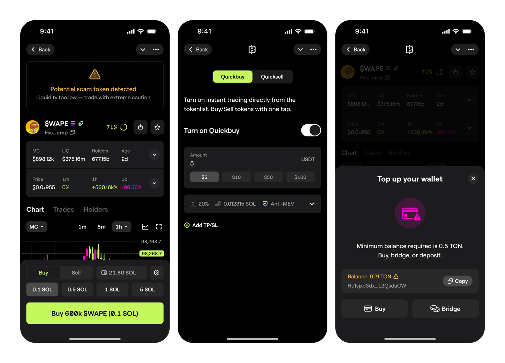
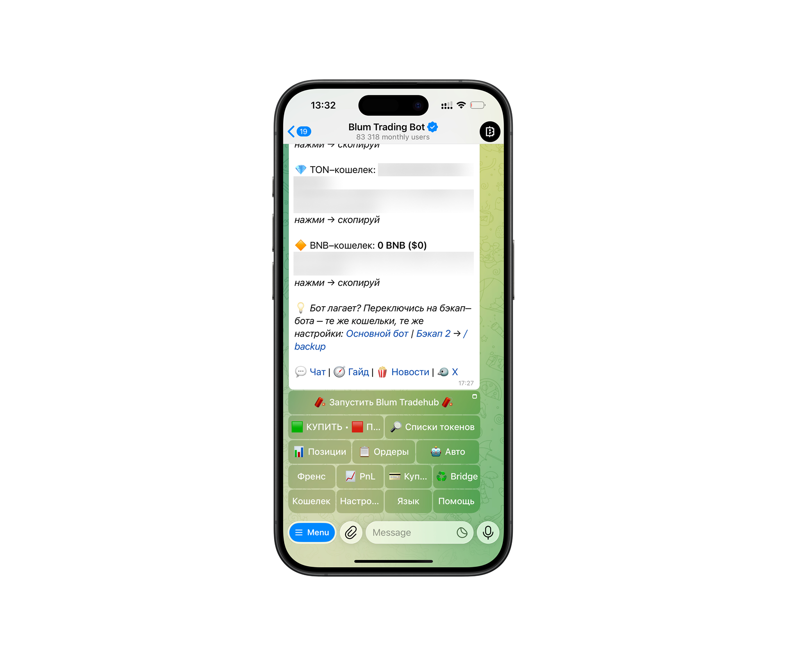
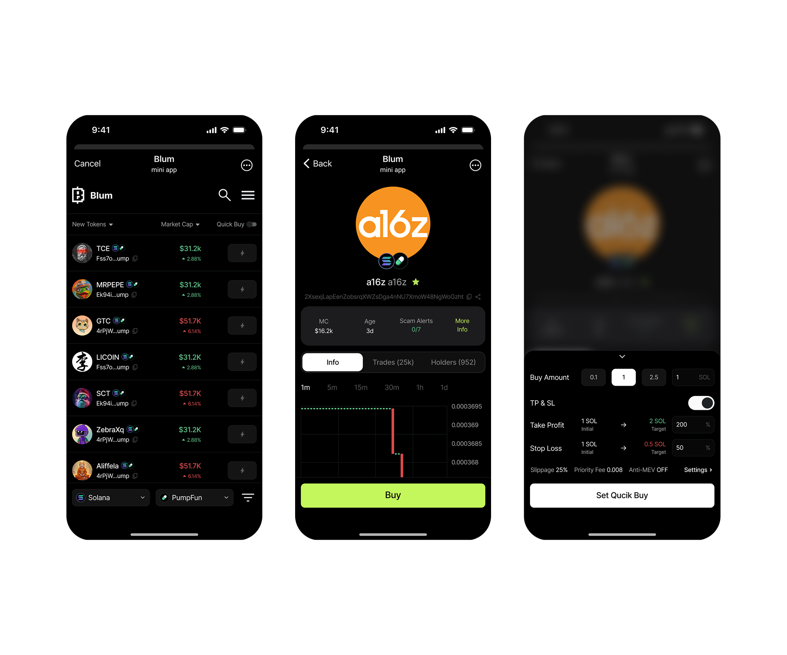
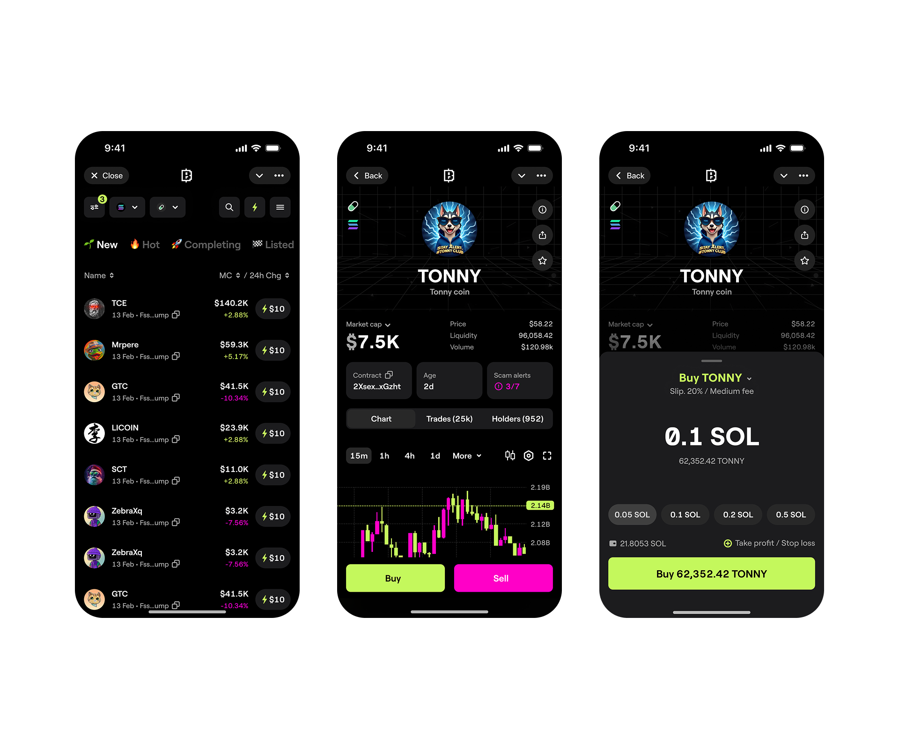
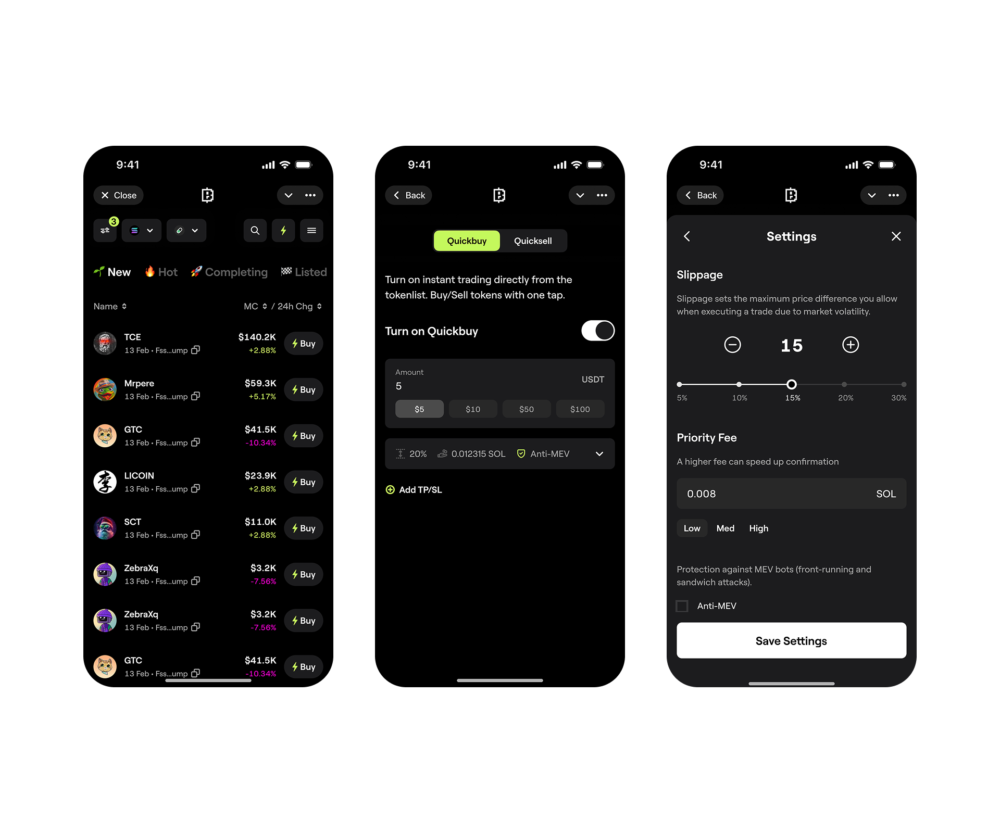
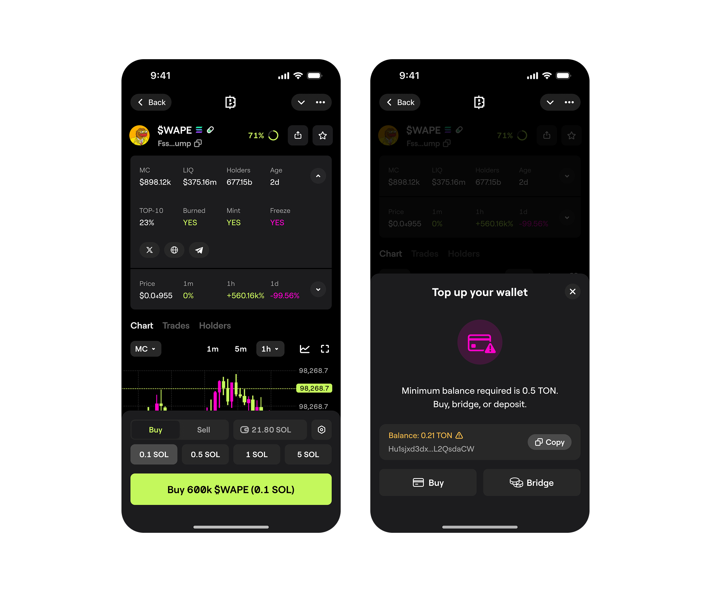
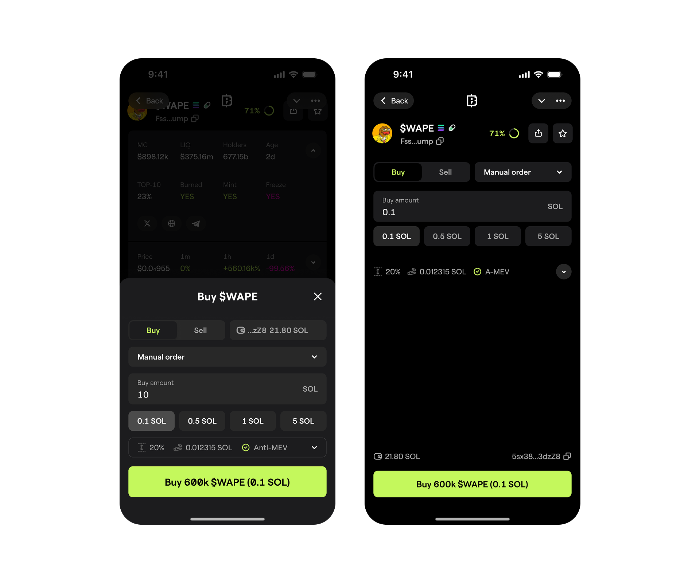
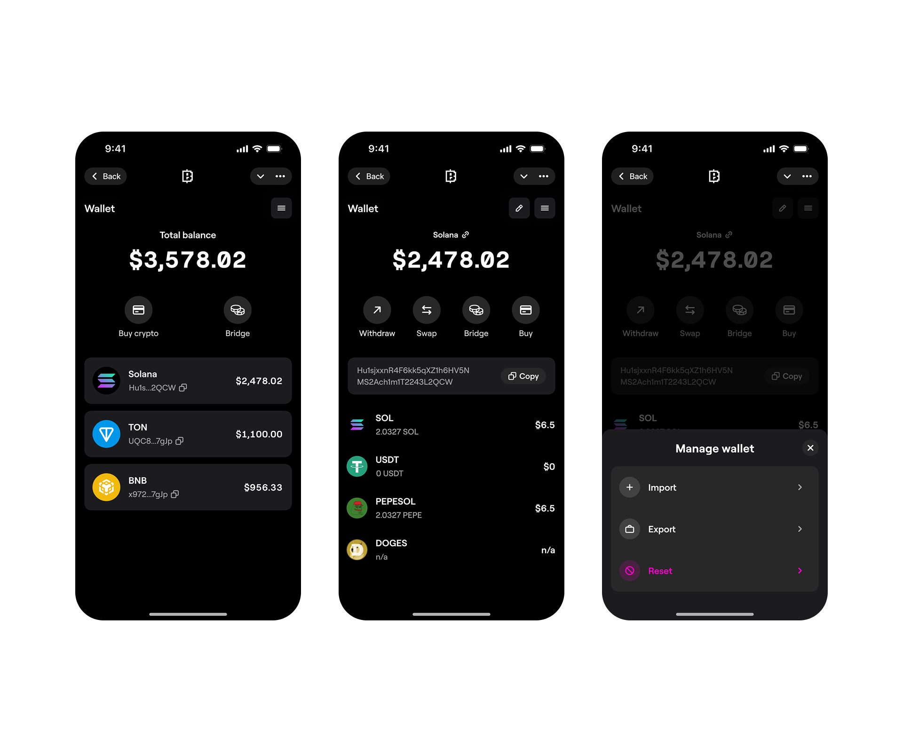

Blum trading hub is a young startup within Blum.io, specializing in developing Telegram bots for memecoin trading.

Problem
The Telegram interface scared off potential customers. It was successful among a small circle of traders, but scaling such a product was difficult.

Nobody really knew the right way to do it.
The field is young, less than a year old. Competitors were navigating this path for the first time, without looking back, borrowing a lot from traditional trading.

Copying competitors' solutions was risky: Dynamic market, raw products, everything changed every month!
Based on the Telegram bot interface, the team assembled an MVP design in a month. No components, no styles, no auto-layouts. And no designer.

The task for designers sounded like this: Apply the design system from the main service, draw edge cases and hand off to development.

In trading, the exchange makes money on commissions.
Up to 80% of profit comes from a dozen major traders who trade directly via API. Other players often make asset purchase decisions based on emotions. Two things matter here:
- 1 Emotions need to be triggered (indicators and casino-style)
- 2 Ability to buy instantly while emotions are still hot
Speed is helped by ⚡ Quickbuy. One-click buy and sell.

And the "I'll get lucky now" feeling is activated by a frightening amount of pseudo-indicators on the token page. Also, competitors aren't afraid to go small: many components are 12px tall.

In adapting our design system, we tried to find a compromise between analysis and emotions, between scale and informativeness. Important stuff first, the rest later.

Final result
Key indicators and a purchase widget fit on the main screen, allowing one-click buy and sell from the token screen.

In one iteration, you could expand the widget and configure the transaction in more detail right in the modal window without loading new components, but due to technical limitations, we made the purchase in a separate window.

Wallet manager — a space for working with dozens of wallets across dozens of blockchains. There's no convenient way to work with hundreds of coins — but they can be converted and withdrawn as SOL/TON or stablecoins.

Before launching the service, we created a waitlist and actively funneled all traffic here using the Telegram bot and social networks.

Results
before launch
made at least 1 transaction
new platform → UI showed
adoption
Blum Trading Hub became the largest multichain trading platform in the world by number of activated traders and the largest application in the TON ecosystem by revenue.